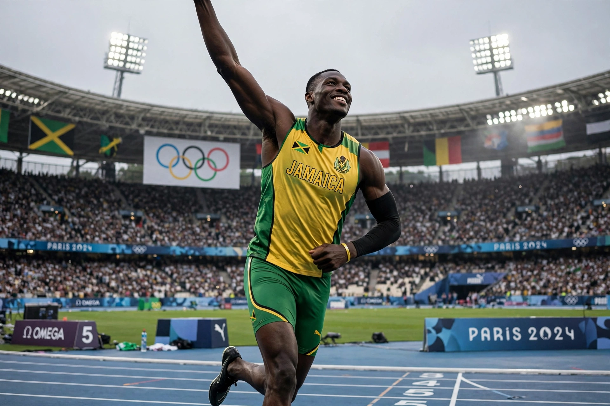

From Wikipedia, the free encyclopedia
| Usain Bolt | |
|---|---|
 Usain Bolt performing his 'Lightning Bolt' pose, arms angled like a bolt of lightning, in Jamaica's green and gold kit | |
| Born | 21 August 1986, Sherwood Content, Trelawny, Jamaica |
| Height | 6 ft 5 in (1.96 m) |
| Sport | Track and field (sprinting) |
| Events | 100 m, 200 m, 4 × 100 m relay |
| Personal bests | 100 m: 9.58 s (2009, WR); 200 m: 19.19 s (2009, WR) |
| Olympic medals | 8 gold (2008–2016) |
Usain St. Leo Bolt (born 21 August 1986) is a Jamaican retired sprinter who is widely considered the greatest sprinter of all time. He is the world record holder in the 100 metres, 200 metres and 4 × 100 metres relay, and an eight-time Olympic gold medallist.
Bolt broke through at the 2008 Beijing Olympics, winning the 100 m in a world record 9.69 s despite easing down before the finish, and completed the 100/200/relay treble. At the 2009 World Championships in Berlin he lowered the records to 9.58 s and 19.19 s — marks that still stand. He repeated the Olympic treble at London 2012 and Rio 2016, the "triple-triple" (his 2008 relay gold was later stripped after a teammate's doping disqualification). Unusually tall for a sprinter at 1.96 m, Bolt combined enormous stride length with the top speed ever recorded in competition.
Bolt retired after the 2017 World Championships in London. He briefly pursued a football career, trialling with Borussia Dortmund and playing for Australia's Central Coast Mariners in 2018, before moving into business and music. His "Lightning Bolt" pose and showmanship made him one of the most recognisable sportspeople on Earth.
Categories: 1986 births | Living people | Jamaican male sprinters | World record holders in athletics (track and field)